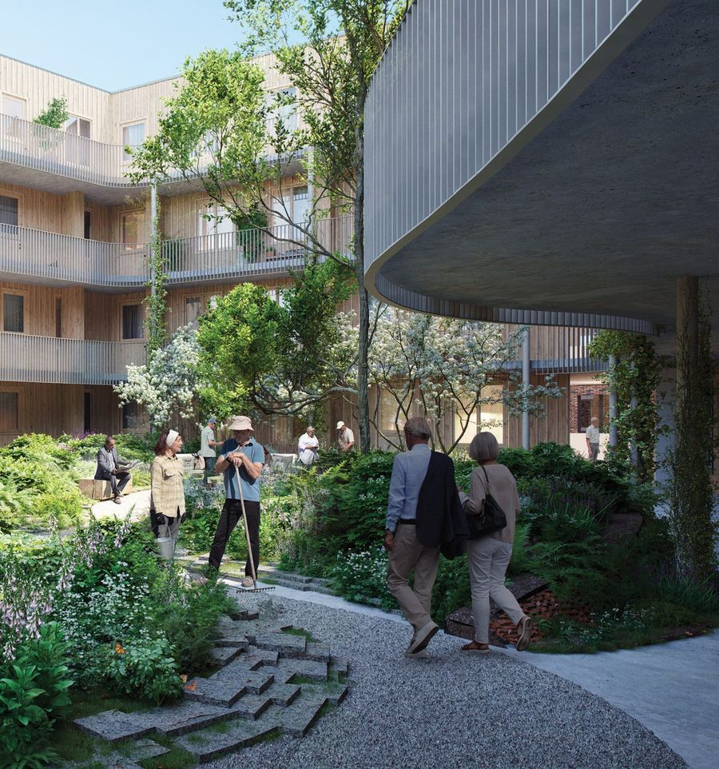
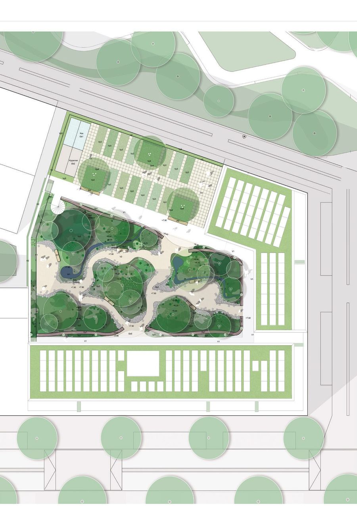
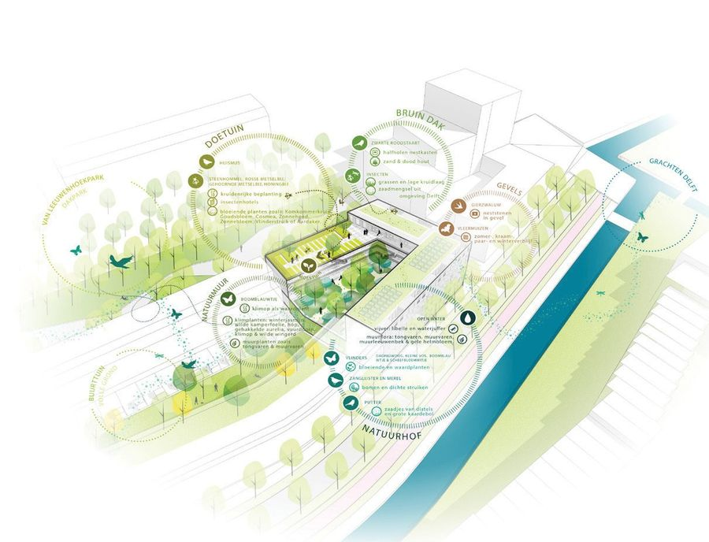
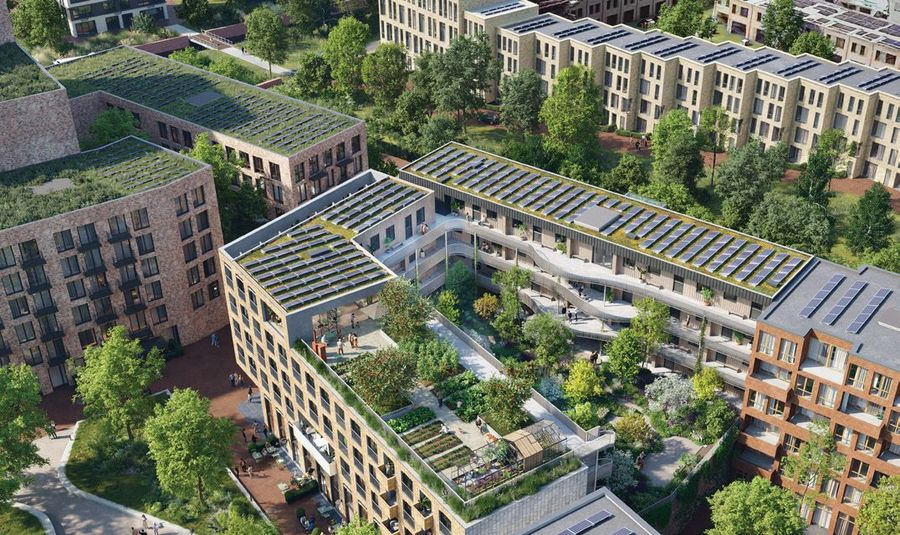

De Koploper
- Place
- Delft
- Year
- 2023
- Assignment
- Daktuin
- Firm
- Buro Sant en Co
- Design
- 2023
- Status
- Tender
- Collaborations
- WAA-TSA, Stadsnatuur, cepezed
- Team
- Sander Singor, Coos van Ginkel, Darina Awasthi

A building designed as an ecosystem, with each biotope tied to its own indicator species.
Working with Stadsnatuur, a nature-focused agency, we developed the building as an ecosystem. Extensive greenery at various heights forms an ecological connection between parcel 6, the Van Leeuwenhoekpark and the Delft canals. Each biotope is associated with indicator species that contribute to the functioning of the wider urban ecosystem.

The building is designed as an attractive habitat for local wildlife, providing food and nesting opportunities. The biotopes are closely interlinked: the upper rooftops with their grass and herb layers attract insects, which benefit the bats and swifts nesting in the façade. Bee species are drawn to the flowering plants on the rooftop field and pollinate the garden's crops.


The precise mix of vegetation in the inner garden creates a nectar source for insects and butterflies. Song thrushes, blackbirds and goldfinches forage among the low vegetation and nest in native trees, with berry-laden shrubs as an extra food source.

 Next projectSport Dak ParkSmart Mobility Hub, Amsterdam, 2021–ongoing
Next projectSport Dak ParkSmart Mobility Hub, Amsterdam, 2021–ongoing